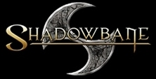

|  |  |
 |
| Shadowbane Beta Goals |
Shadowclan Message Boards |
Guild Structure |
Joining
and Character Creation |
History | Irekei Language |
Ways
of the Clan |
Contact Webmaster |
| Government: Communist/Socialist - The Clan comes above all else. Every member works for the betterment of the virakt. Personal wealth is allowed, but frowned upon. A majority, if not all, of the funds acquired, generally go into the guild treasury and are used for the betterment of the Clan as a whole. Clan members who seek to accumulate excessive personal wealth are shunned and sometimes even stripped of their money and goods and thrown naked into the desert so that they might remember the value of community. Survival is a group effort upon the Burning Sands. On the other side of the coin, no guild member will ever be in need. If something is needed, just ask your fellow clan members. Shadowclan will take care of its own. For in-game purposes, Oligarchy will likely be the government type of the Shadowclan guild, though Monarchy is also an option depending on how guild control works in-game. |
||
| Guild Type: Virakt - Shadowclan Shadowclan is a gathering of many virakt under one banner. We are a 'family' of tribes who have bonded together to present a united front against the fir'khanim and heretical Irekei. |
||
Official Guild Ranks:
Young Irekei who have yet to prove themselves in their Rite of Passage. Irikhan - (Hot Blooded One; post Rite of Passage) Young Irekei who have completed their Rite of Passage and are accepted as full members of the Clan. Sek'alar - (Hunter; warrior of note) Mature Irekei who have earned respect within the Clan Khal'usht - (Flame Keeper; typically older Irekei who advise leaders) Council Members. Leaders of the Clan Arkhalar - (Blade Wielder; literally "clawed one", a Family head) Shadowclan Sub-guild leaders and Family Heads Khal'urvho - (Phoenix; literally "Fiery bird") |
||
|
OUT OF GAME LEADERSHIP: The Clan Helm Branch Leader IN GAME LEADERSHIP: An Elder Council (EC) will be formed consiting of 5 members nominated and elected to these "permanent" positions. An Elder Council member can be removed (and/or replaced) by unanimous vote of the 4 other EC members. All 5 Elder Council members will be given "INNER COUNCIL" level of authority. (basically access to most of the same commands as the guild leader according to the FAQ). The EC will vote by simple majority on most issues. Because of time/risk/resources involved, a unanimous EC vote is needed to start a siege. Unanimous EC vote also required for changing the basic Leadership and Racial "structure" of the clan once it is decided upon. The Elder Council (EC) will consist of: Guild Leader (GL) - (title based on in-game rank): This is the "Official Branch Leader"; Figurehead for the Clan. The GL "founds" the guild in-game. He/She plants the guild tree. The GL is the character name that will show up on the interactive map as the "leader" of the clan. He also supports other EC members as needed. (This person should not be an existing OOG Clan Helm member) Civic Leader (CL) - Qhi'usht (literally "Spawn Keeper"): Oversees the intake of new members (lists, promotions, etc.. Develops "Gruntee tests" quests, hunting trips (if needed) etc). The CL enforces the standards for intake decided upon by the Elder Council. CL also mobilizes older members to help new members and is responsible for fielding proposals for building construction and presenting them to the EC. Shares responsibility with the RL for collecting money and maintaining the Clan treasury. Religious Leader (RL) - Vir'usht (literally "Keeper of the Sands"): The RL develops religious and roleplay aspects of the clan and makes sure they are consistent with the fiction of Shadowbane. The RL acts as clan historian, recieves new group proposals and supports the Civic Leader as needed with training and indoctrinating new members. Responsible for religion development, ceremonies, record-keeping and promotion of religious fervor. Shares responsibility with the CL for collecting money (tithes) and maintaining the Clan treasury. Also helps TL and DL with maintaining the purity of Clan thought (ie spies). Tactical Leader (TL) - Vir'uus (literally "Master of the Sands"): (may possibly require the Command Discipline for this position) The TL is the military commander of the clan. The TL develops the overall tactics/strategy of clan in large battles (with input from others). The TL is in charge of city defense (may work on KOS list with Diplomatic Leader). The TL maintains clan arsenal and inventory of military supplies (arms/armor/siege engines etc.). The TL works closely with the CL to make sure that the SC city has enough appropriate shops/vendors to keep the Clan armed and prepared. They also often work with the DL on matters of war and spy info. Diplomatic Leader (DL) - Uri'ubar (literally "Cold Hand"): The DL is in charge of maintaining inter-guild relations with neighbors, and is considered the "first contact" with outside guilds with questions/issues/negotiations. The DL maintains KOS lists for cities and lists of current guild relations (War/Peace/Ally/Subguild status). DL is also responsible for keeping track of active guilds both in and out of game. May also be required to collaborate with the Tactical Leader and Religious Leader for info/spy purposes. Note: All 5 Elder Council members cannot be members of any particular tribe/family/"bludline" group or organization. Upon promotion to the Council, the Council member must resign from any prior leadership positions. No individual EC member will make final decisions on important clan policy without an EC vote on the issue.
ARKHAKT: Shadowclan is divided into several Arkhakt (literally "claw-clan"), or collection of tribes, each one representing a major faction within the Clan. Each Arkhakt has one representative who sits upon the Elder Council and voices their opinion. They still do not have an official vote on Council matters, but, often just having the ears of the Council Members can mean much influence. The Arkhakt are controlled by Troni'bhor (rising family) who are the leaders. If there is ever a point at which Shadowclan exerts control over multiple cities, it is likely that an Arkhalar(s) from an Arkhakt will be appointed to oversee the vassal city(ies). Each Arkhakt is represented by a creature of the desert which embodies the spirit of the Arkhakt and serves as a totem to all of its members. At the moment there are three Arkhakts: Qhi'nkur - Totem of the Drake
TRIBES: Typically, the Shadowclan is informally divided along tribal or famliy lines with each of these 'tribes' being led by an Arkhalar. These Arkhalars often vie amongst themlseves for respect and power, but they all realize that the Clan comes before all else and will readily set aside their differences when the Clan is threatened. Given the almost constant state of war with the fir'khanim these days, it is rare for any Tribal disputes to devolve into excessive bloodshed. Tribes ebb and flow as the game progresses. They are considered unofficial until such a time as they get their act together and petition the EC for official status (requirements to be determined later). If granted, they become an official Tribe and their leader is given the official rank of Arkhalar. They are considered in-game leaders and outrank any Irekei who is not also a leader of a Tribe or a member of the Inner Council. Each tribe may choose who they wish to allow in their tribe. Each character may only belong to one tribe at a time. Though switching tribes is allowed, joining a tribe is considered a serious commitment and jumping between tribes is frowned upon. It is recommended that each player carefully consider their choices before joining a tribe. Basically, members get a concept together, write a proposal, get approval from the Arkhalar of their Arkhakt, forward it to the Religious Leader for approval. The Elder Council votes on the proposal and simple majority vote decides if the new group can "officially" form. So, it is possible for players to: These are just some examples, players are encouraged to
come up with their own ideas and proposals for tribes, though it's important
to realize that, for various reasons, not all proposals will be accepted. It is also possible for tribes to grow and/or shrink and die out...
FAMILIES: Families.. Among Irekei, the family tie can often be the strongest. Each Arkhakt is led by a single family. Family members will usually stay together withing the same Arkhakt and often form tribes, but it is not unknown for a young Irekei to desire to prove themselves away from the fold.
RANK CHART: Guild Leader (title based upon status of SC cities) - figurehead
of the Clan; veto power over council
|
||
| The beginnings of SC in SB: At first, Shadowclan will most likely be just a bunch of Irekei gathered under one leader. Hopefully, some leader types will stand out early on and be promoted to the next rank. As more and more members are promoted, other leaders will be named, sub-guilds founded and additional virakt possibly distinguished. | ||
| Diplomatic Relations:
Deep within the heart of the Burning Desert lies the legendary Forbidden City, home of the Shadowclan. Fir'khanim never set foot within its walls, and few non-Clan Irekei are allowed the honor of visiting. Shadowclan does not hand out alliances. We have yet to meet other Virakts that were worthy of such an esteemed gift, and the fir'khanim are only good as thralls to our great empire. This is not to say that Shadowclan will not form any alliances, but when we do, it is a sacred trust and honor bestowed upon those lucky enough to be granted such a relationship. An Irekei's word to another Irekei is sacred. |
||
| Sub-Guilds, Vassals and Allies:
Sub-guilds are subject to the same rules as the main Shadowclan guild and are considered part of the Clan, receiving whatever benefits and preferred treatment that brings. Allowed access to the Forbidden City. Vassals: Guilds pledged to Shadowclan or one of its sub-guilds that were not formed within Shadowclan. Vassals are not subject to the same rules as Shadowclan guilds. Rules and benefits for each will likely be decided on an individual basis. Considered a 'lesser' part of the Clan and may be subject to heavy taxation. May be exiled from the Clan for inappropriate behaviour and/or bringing dishonour upon the Clan. Allies: Guilds that are working with Shadowclan towards a common goal Allies will most likely be few and far between, as the Clan is very suspicious of outsiders who are not under Clan rule. Relations with allies will be decided on an individual basis |
||
|
Disclaimer: Many of the ideas here have been adapted and plagiarized from all of those who posted comments/suggestions/ideas on Shadowclan's Shadowbane Discussion Board. I'm too lazy to acknowledge all of the individual contributions, but I do want everyone to know that this proposal could not have come about if it weren't for all the great info and input the whole Clan has contributed. Hoowah Shadowclan! |
||
|
Another Disclaimer: This site is under construction and none of these proposals are written in stone. The rules, structure and guidelines for Shadowclan in Shadowbane will not be set until the game is released. |
||